Explore
1. Graph browser with RFC on the center node

The graph-browser example opens with Reinforcement Focus+Context active on its central Graph browsers node. Yellow halos identify the reinforced center and its five immediate branches; the surrounding graph retains its ordinary connections and forces.
Explore
2. Reveal the complete graph

Show whole graph reveals stored nodes beyond the current neighborhood. Expansion, collapse and hiding change the visible graph while retaining the complete graph for editing and export.
Explore
3. Graph spacing, canvas zoom and viewing lens

Graph spacing changes node distances. Canvas zoom scales shapes, labels and strokes together. The focus + context slider applies the independent nonlinear viewing lens.
Explore
4. User key map

The help dialog and docs/KEYMAP.md share the same implemented command definitions, including graph spacing, canvas zoom, navigation, editing and file shortcuts.
Search
5. A searchable research library
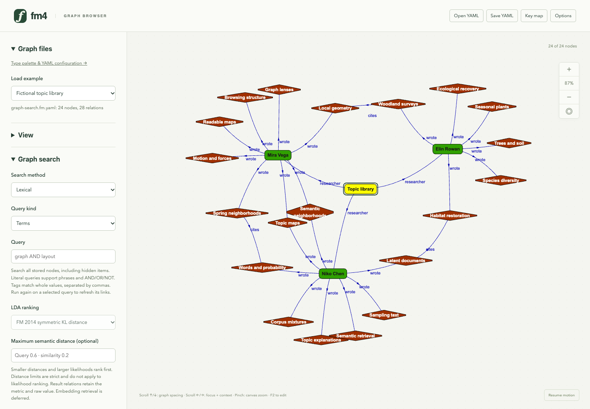
This fictional graph contains 24 nodes and 28 semantic relations: three researchers, eighteen papers, two bridge papers and a collection. Labels, annotations and exact tags are searchable, including hidden items. The library starts without reinforcement; successful searches activate RFC around their query or similarity source.
Search
6. Start a search directly on the graph

Select Mira Vega and press Ctrl+F. A query node appears immediately, linked to Mira as context, with its text editor on the graph. Type spring layout and press Enter to retrieve. The empty draft is excluded from the search corpus; ordinary typing and text deletion keep their normal meaning.
Search
7. A term query joins its context
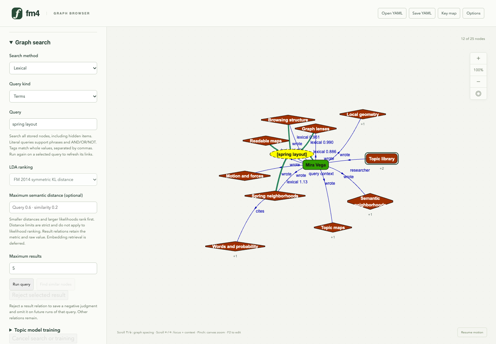
Enter runs the literal query and reinforces its neighborhood around the query node. Solid green links show compact ranks (#1, #2, …); the dashed green link identifies context. Blue semantic relations remain. Hover a result for the exact engine/score. F2 edits and reruns the query without duplicating it.
Search
8. Whole-tag retrieval
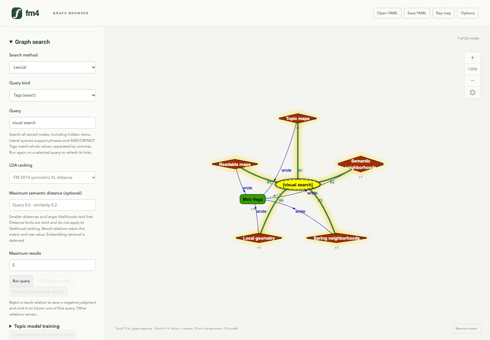
The same query node now retrieves exact visual search tags. Tags are explicit metadata and work without topic training. The query replaces its earlier result links while retaining context and manual semantic relations.
Search
9. Train and inspect topics

Three topics are trained locally for 200 serial Gibbs passes with seed 4357, alpha 0.1, beta 0.01 and minimum document frequency 2. Separate local JSON files can save/reload the model and its corpus. The most probable words make the fitted topics inspectable. This deliberately separated synthetic corpus does not establish general retrieval quality.
Search
10. Retrieve by inferred topics
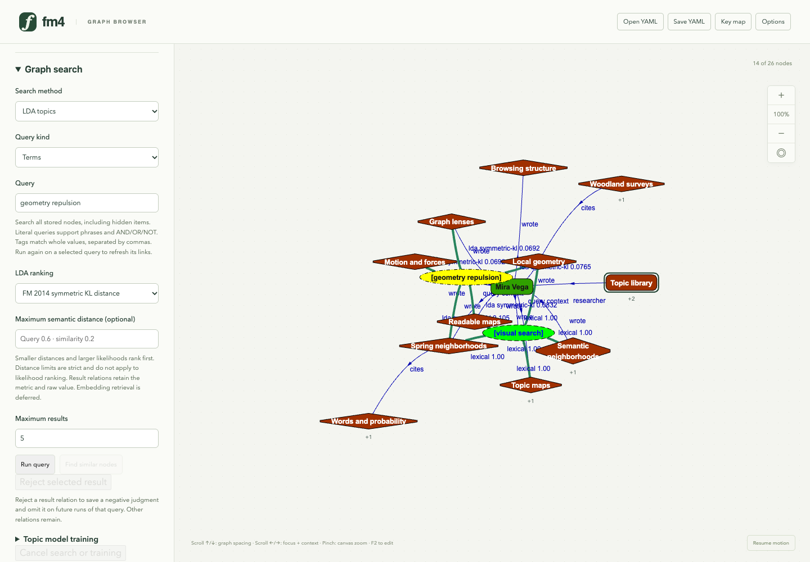
Ctrl+Shift+F starts a separate LDA query. Enter submits geometry repulsion and moves RFC to this query. Green rank labels stay short; hovering reveals symmetric KL distance in bits (lower is better, default limit 0.6). The earlier tag query stays available. Relevance does not change node importance or RFC stiffness.
Search
11. Use an existing paper as the query
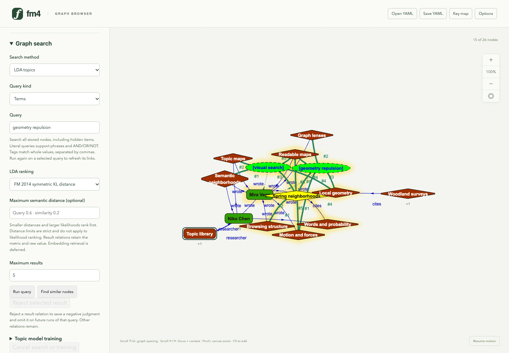
Select Spring neighborhoods and press Ctrl+Shift+R to retrieve topic similarities and reinforce a neighborhood around this paper. Ctrl+R provides literal similarity. Compact green ranked links stay distinct from existing blue authored/citation relations. No separate results page is needed.
Search
12. Retain a negative judgment
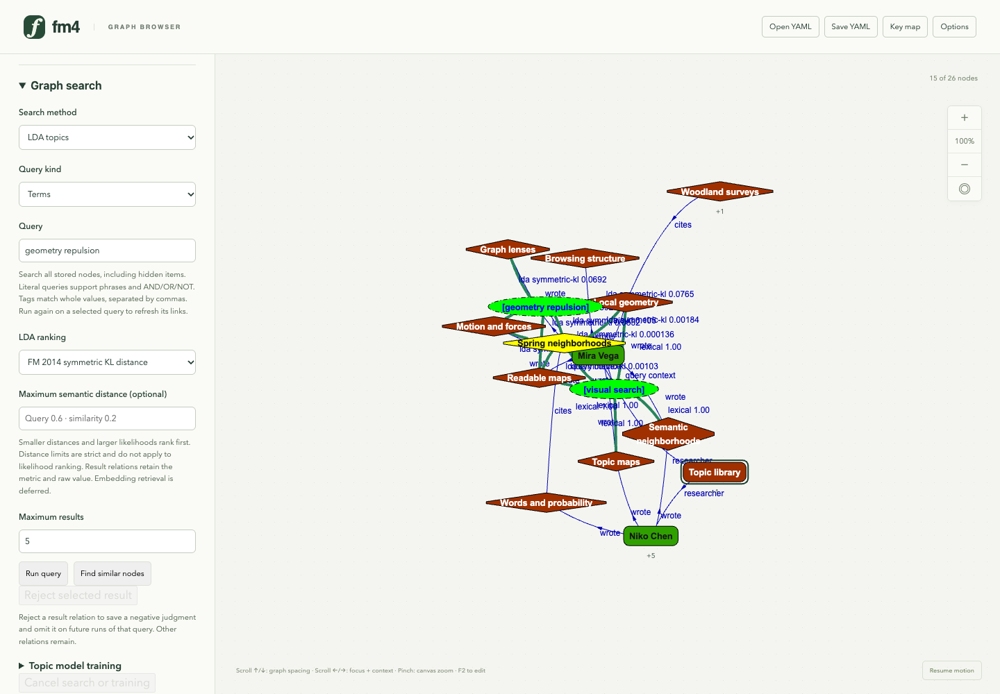
Rejecting a selected green result relation removes that link and saves its source, target, query, engine and corpus provenance. Repeating the same query omits that item. Native YAML saves queries, remaining links and feedback; model JSON is saved separately through the training controls. Feedback learning remains future work.
Search
13. Remove a query and keep the source graph
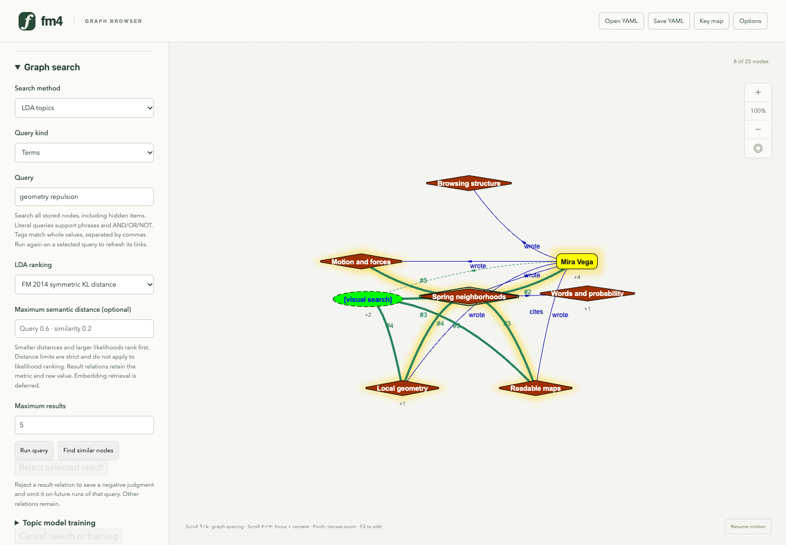
Select the LDA text-query node and press Ctrl+Backspace (or Ctrl+Delete) while graph focus is active. Only that query and its incident associations disappear; retrieved papers, original semantic relations, the earlier tag query and the paper-based similarity search remain. Native YAML can retain the queries and rejection judgments you choose to keep.
Files and content
14. Node types and curved relations
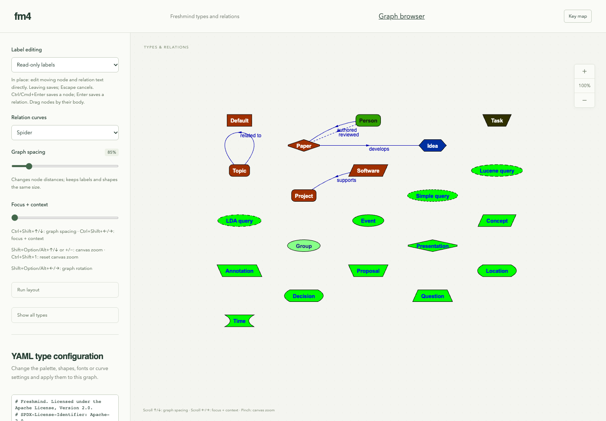
The palette page shows all 21 configured Freshmind node types, labeled curved relations, parallel edges and a self-loop. Its YAML editor applies semantic and visual configuration to the existing graph.
Files and content
15. Open the approved Berry example
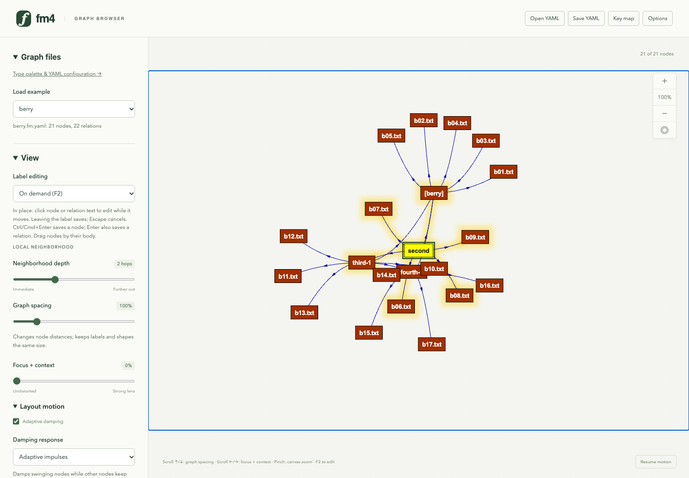
Berry is one of the two approved migrated datasets. The native YAML graph retains 21 nodes and 22 relations, annotations and original linked-resource paths.
Files and content
16. Browse the approved NIPS dataset
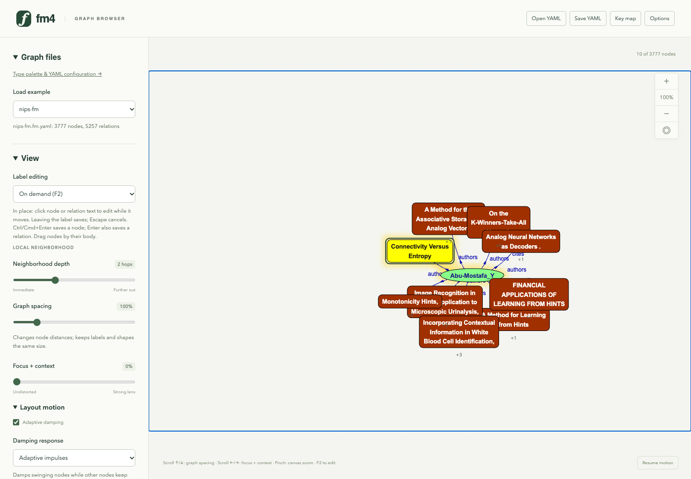
NIPS-FM contains 3,777 nodes and 5,257 relations. Opening it starts with a bounded neighborhood; the full graph remains stored for subsequent navigation and export.
Files and content
17. Florentine families
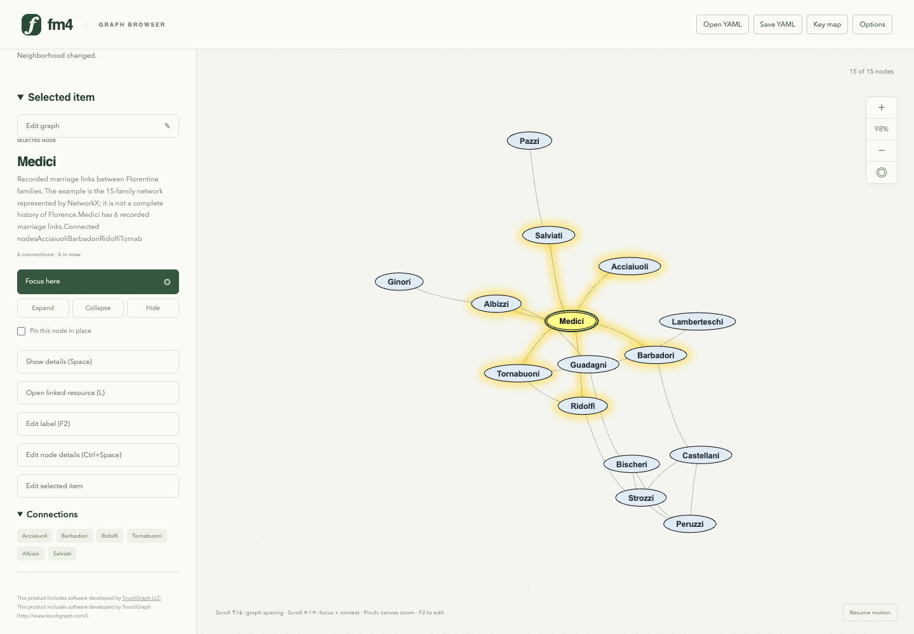
This public example has 15 families and 20 undirected marriage links. Node content contains graph-derived summaries and links to the connected families, with source attribution retained in the document.
Files and content
18. Edit a multiline node label
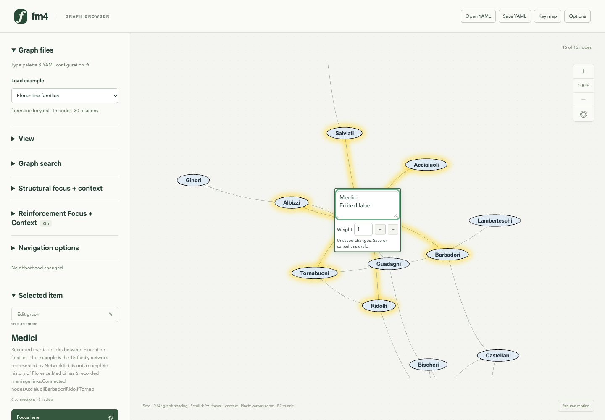
F2 opens an inline label editor on the selected node. A draft stays separate from the model until committed; node identity, relations and annotations are retained.
Files and content
19. Annotations and item details
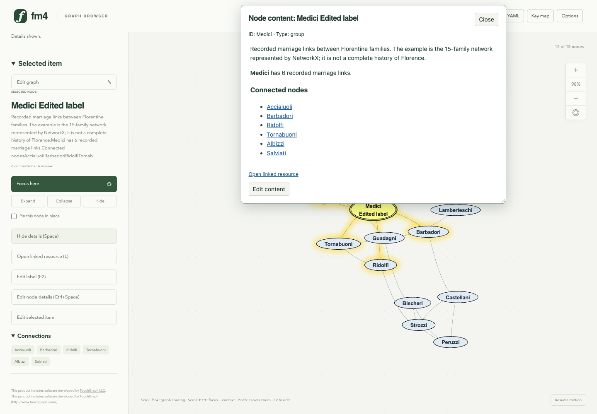
Ctrl+Enter commits the label. Space or Show details opens the selected node's content in a separate, resizable popup. Internal links navigate to connected nodes; Edit content opens the annotation overlay.
Files and content
20. Save the complete graph as YAML
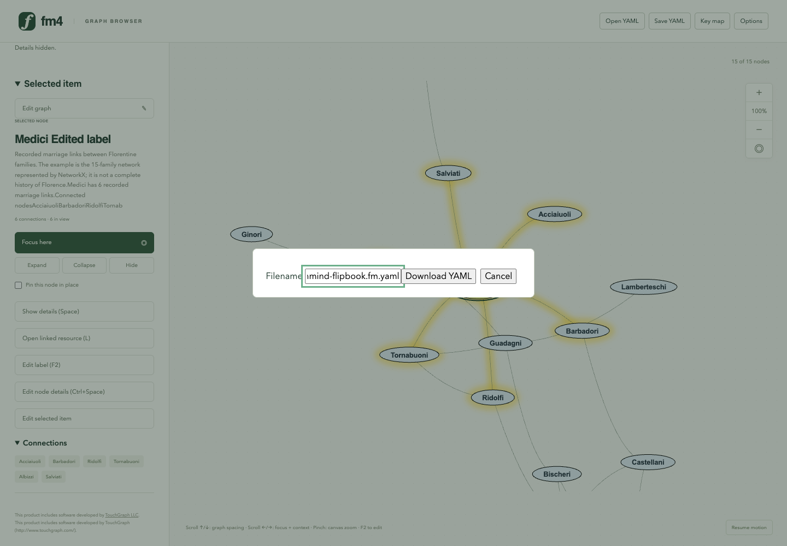
Ctrl+Shift+S opens the filename dialog. Saving downloads the complete stored graph, including hidden nodes, with optional layout/view state and embedded or companion type configuration.
Focus + context
21. Single-focus comparison: ordinary layout
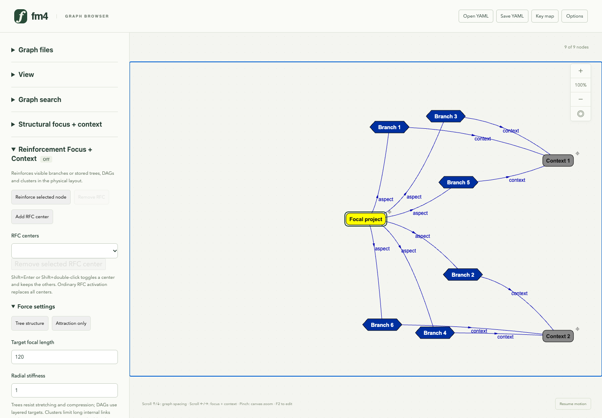
The synthetic crowded-star fixture uses a fixed center and fixed context anchors. This is the ordinary TouchGraph layout after 250 batches from the saved initial coordinates; RFC is off. Adaptive damping is off throughout the fixed-force comparison. Both comparison views use 200% graph spacing and 100% canvas zoom for readability.
Focus + context
22. Single-focus comparison: attraction reinforcement

Reload the identical graph, choose Attraction only and run 250 batches. This earlier preset combines attraction multiplier 3 with angular stiffness 300, without a target-length spring. Soft yellow halos identify the reinforced nodes and relations; semantic graph records remain unchanged.
Focus + context
23. Single-focus comparison: length-constrained tree
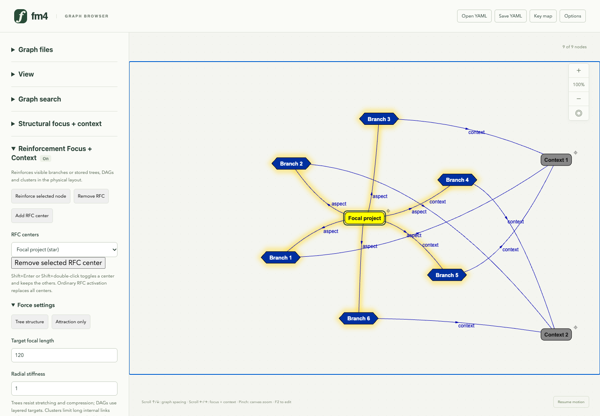
The default Tree structure preset combines target focal length 120, radial stiffness 1 and angular stiffness 10000. From the same starting graph and after 250 batches, the focal star is more regular. Both stronger angular constraints and the new length spring contribute. Yellow halos show reinforcement; optional focal-region exclusion is demonstrated separately below.
Focus + context
24. Weighted RFC for horizontally extended labels
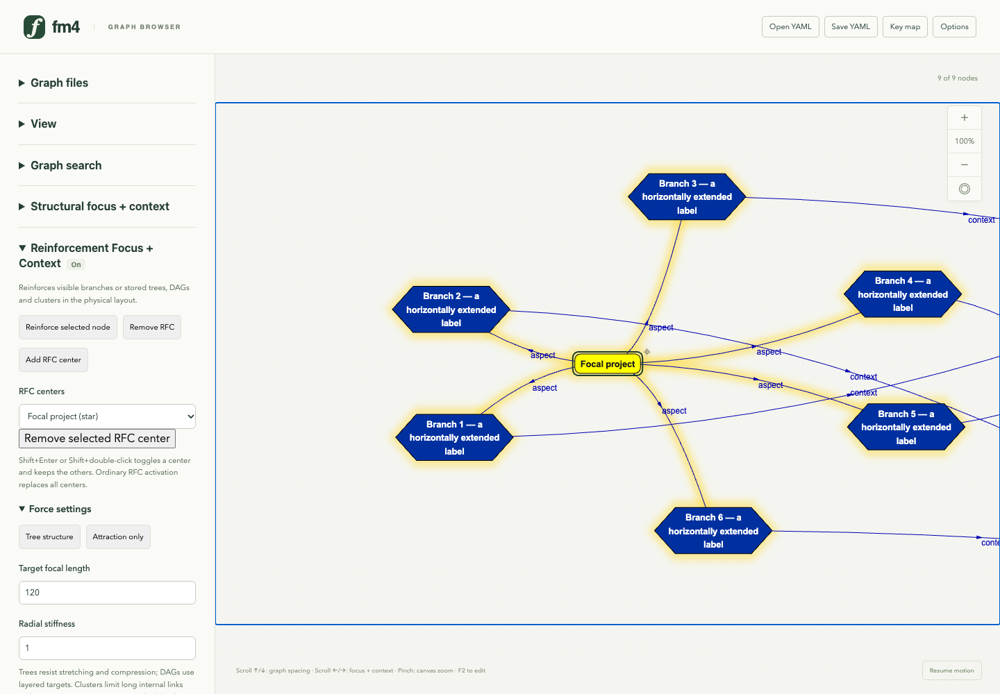
The wide-label fixture uses horizontal coordinate weight 0.25 and vertical weight 1. Equal angles are measured in weighted physical coordinates, permitting a wider focal layout while the viewing lens and both zooms stay independent. Ordinary context springs still compete with reinforcement; the metric alone does not guarantee clear space or eliminate label overlaps.
Focus + context
25. Reinforce multiple stored trees
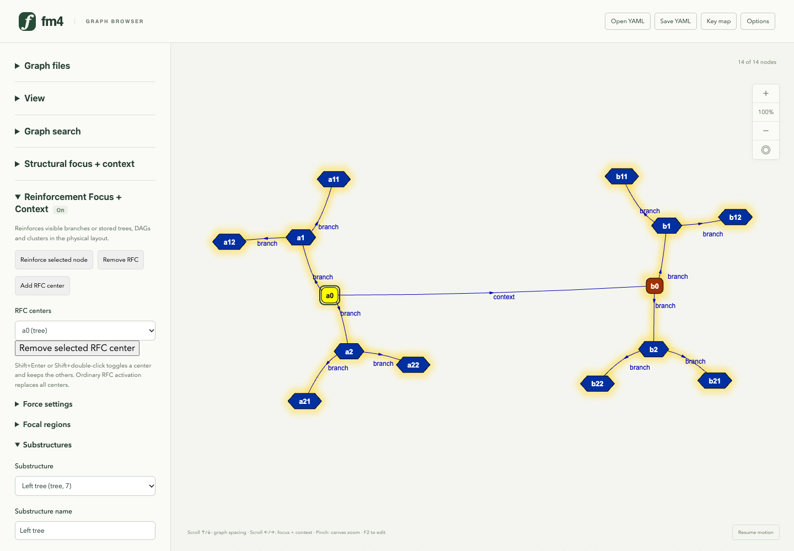
Two saved tree definitions reinforce deeper neighborhoods at the same time. Their context relations remain ordinary graph edges. Stored membership survives YAML export; active RFC centers are temporary view state. Shift+Enter can also add or remove an individual center.
Focus + context
26. Overlapping clusters and their boundaries
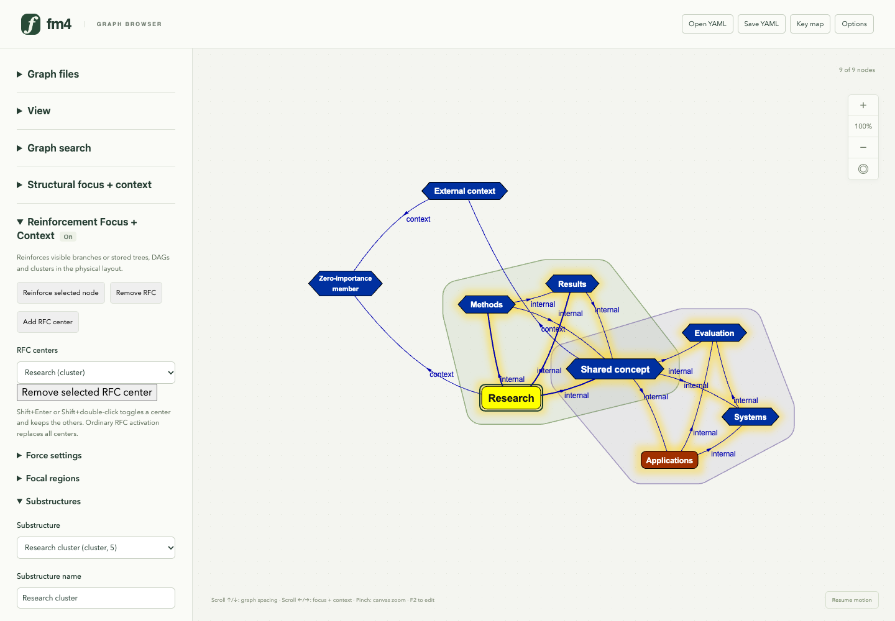
RFC can reinforce cyclic clusters as well as trees. These two stored clusters share a member, retain their internal relations and show translucent boundaries. Cluster rigidity controls resistance to deformation; the representative selects the group without becoming a physical anchor.
Focus + context
27. Optional focal-region exclusion
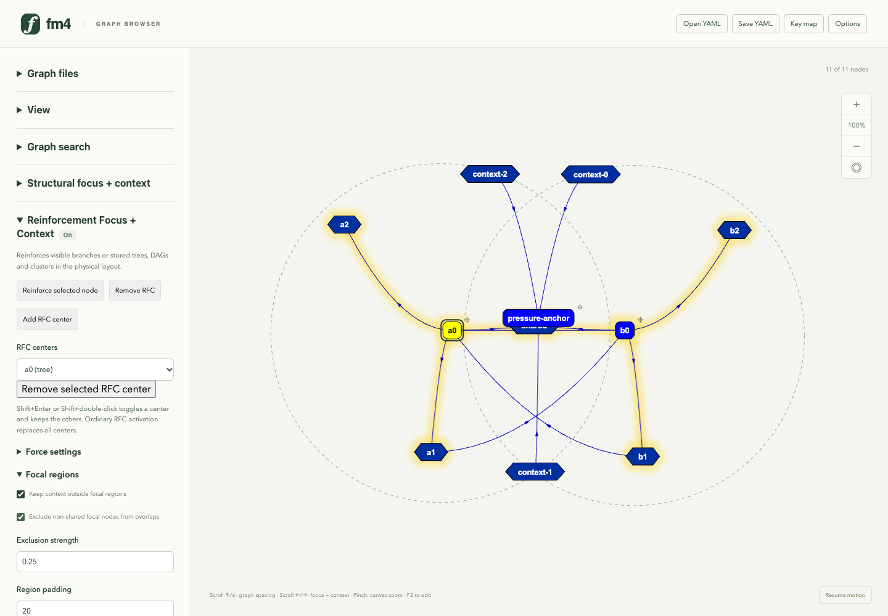
Dashed physical regions show the space reserved around two reinforced structures. Optional exclusion pushes context and non-shared focal nodes away from those regions while shared members remain exempt from their own regions. The forces are soft; pinned nodes and labels can still overlap.
Focus + context
28. Node importance and exact weight values
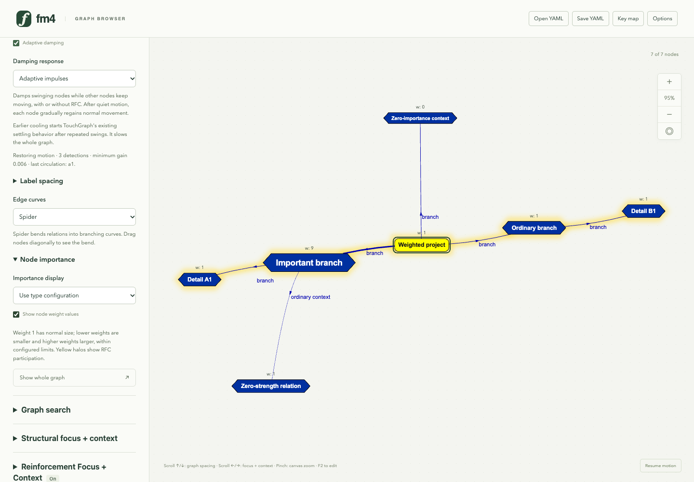
Node weight scales body and label size within configured limits. Weight 1 keeps normal size and weight 0 remains visible. Optional values make weights explicit when labels differ in length. Size shows importance; yellow halos independently show RFC participation.
Focus + context
29. Combine RFC with structural aggregation
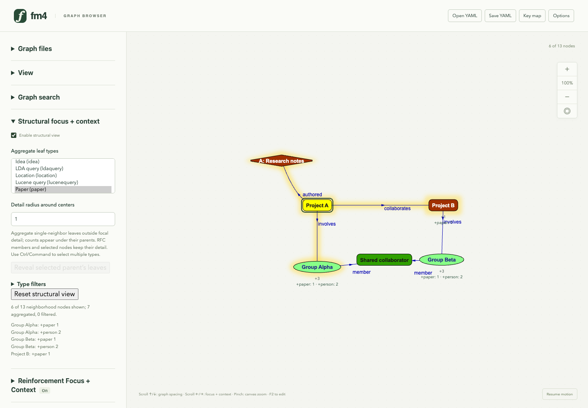
The structural focus + context example combines a viewing lens, RFC and reversible Person/Paper leaf aggregation. Six of thirteen nodes remain visible, with seven aggregated leaves counted under their parents. The shared collaborator stays visible because it connects two semantic neighbors. The complete graph remains intact.
Focus + context
30. Reveal aggregated detail without losing context
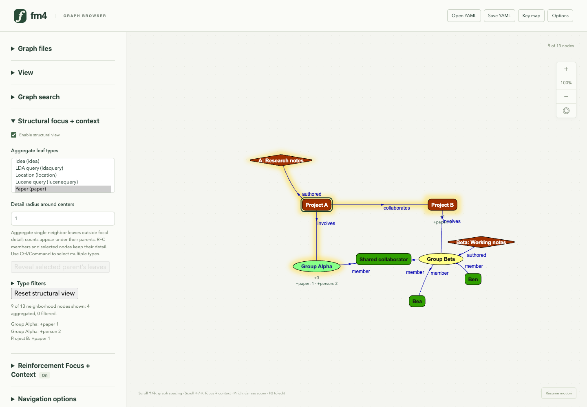
Select Group Beta and reveal its leaves to restore detail while retaining the current graph, focal center and lens. Nine nodes are now visible. E also reveals a selected parent's leaves; Reset structural view restores the current neighborhood without deleting semantic data.
Readability
31. Inspect overlapping node labels
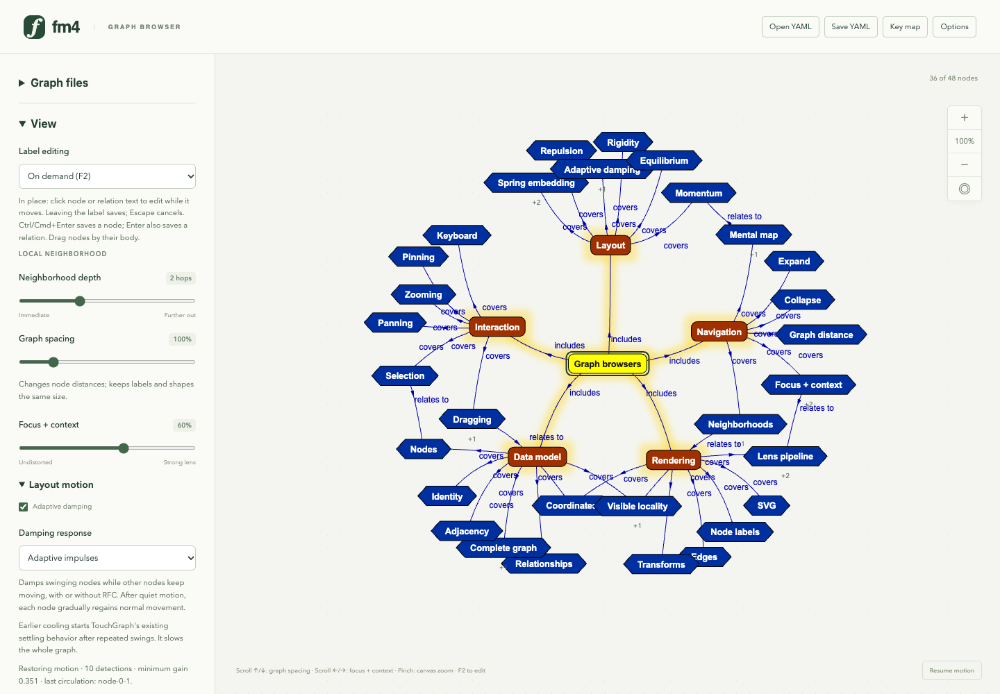
The graph-browser example retains RFC on its center node. Point-based layout can leave wide node labels intersecting even when their centers are apart. Label spacing uses the measured visible bodies, including multiline labels and importance scaling.
Readability
32. Separate overlapping nodes
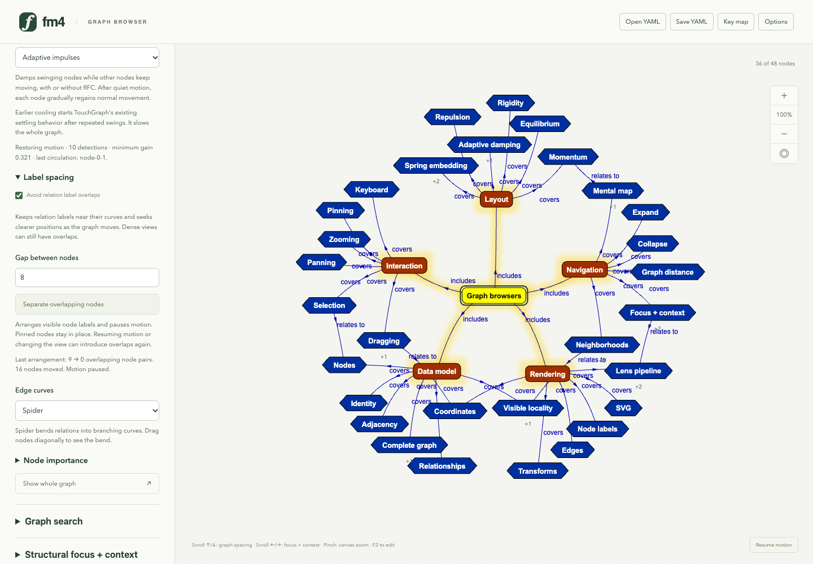
Separate overlapping nodes arranges visible bodies with a requested gap and pauses motion. Pinned nodes and the viewing focus stay in place; semantic relations, RFC, hidden nodes and viewing settings are retained. The status reports remaining intersections. Resuming motion or changing the view can introduce new overlaps; relation labels and crossings are separate concerns.
Readability
33. Inspect original relation-label positions
With node bodies already separated and motion paused, turn off Avoid relation label overlaps to inspect the original midpoint-and-offset anchors. Relation text can still intersect node bodies or other relation labels. The following view uses these exact node positions and curves.
Readability
34. Place relation labels near clear curve positions
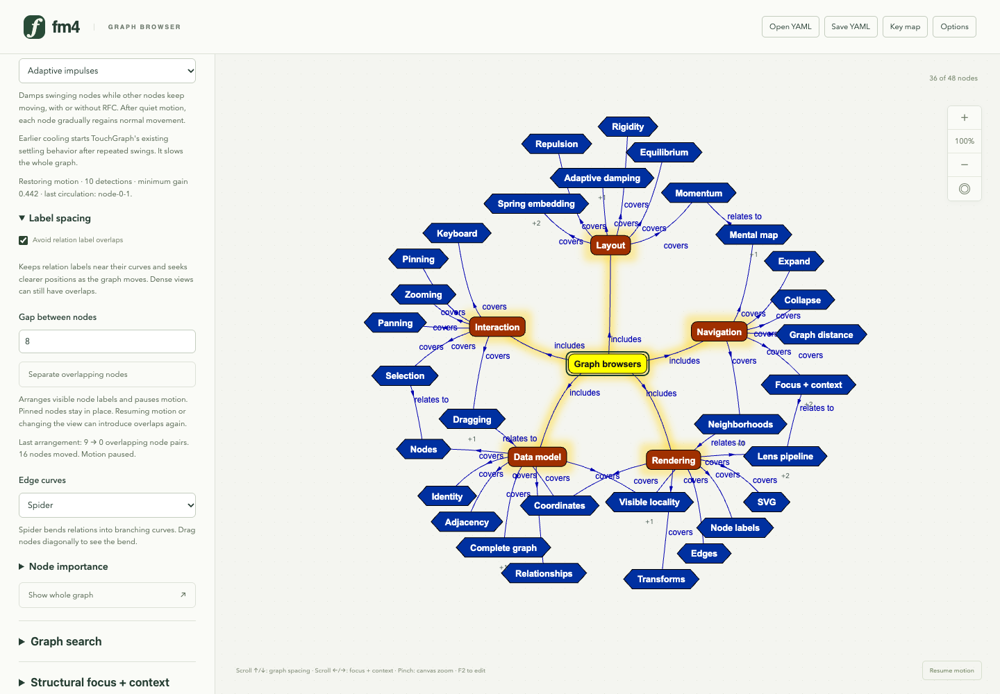
Avoid relation label overlaps measures SVG text and tries nearby positions along each curve and its normal. The browser enables this bounded presentation pass by default. It reduces label–node and label–label intersections in this view while retaining every label, node position and curve. Dense views can still overlap; toggling off restores original anchors.
Editing and keyboard
35. Edit labels and weights together
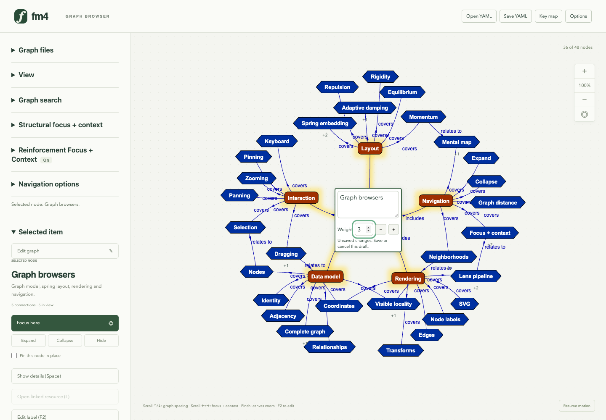
F2 opens a graph-anchored label overlay with weight controls for either a node or a relation. Ctrl+G/H adjusts the shared draft; a numeric suffix such as Graph browsers =3 also sets absolute weight on Save. The draft leaves the graph unchanged until committed; Escape cancels both label and weight.
Editing and keyboard
36. Edit node details directly in an overlay
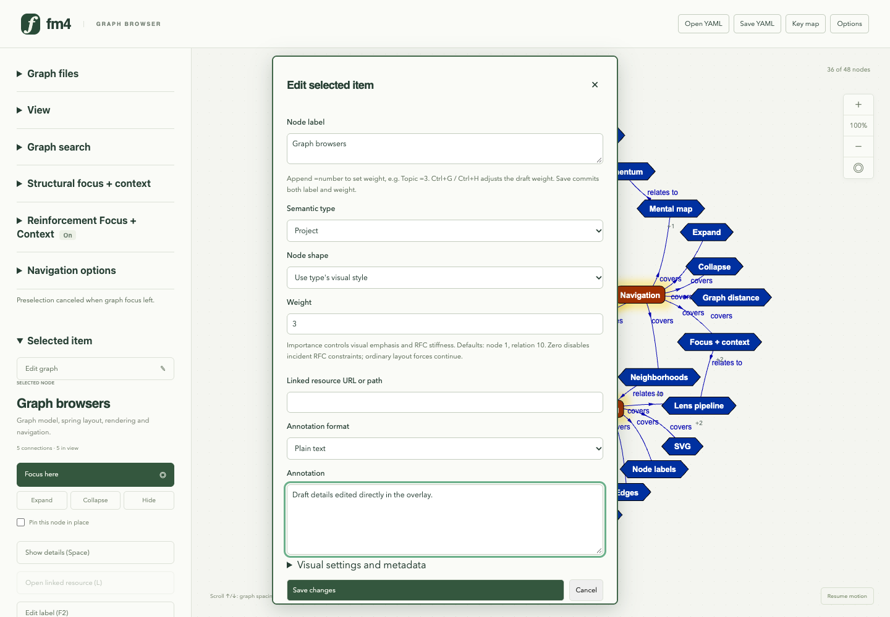
Ctrl+Enter commits the weight. Ctrl+Space or Shift+F2 then opens the full modeless editor at the node annotation, outside the side pane. It also exposes types, visual settings, URLs and metadata. Close retains a per-item draft; Save commits and Escape cancels. The annotation shown here is still a draft.
Editing and keyboard
37. Point at the graph to control its center
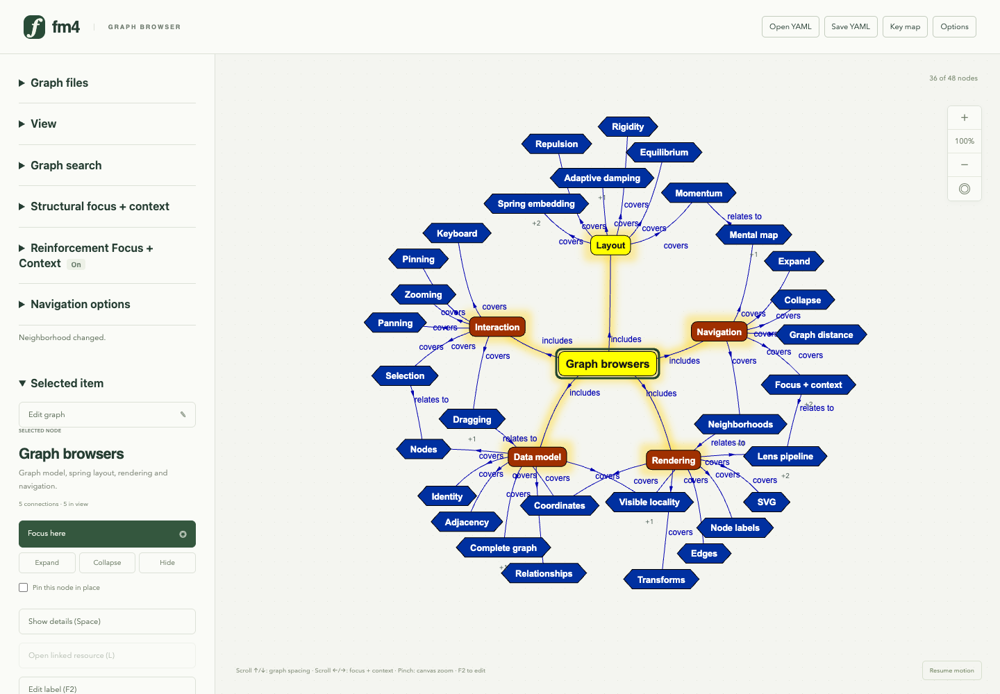
Close the editor, clear selection and move the pointer over a branch without clicking. Keyboard control resumes at the node in the viewport center, independently of the hovered branch. Enter acts immediately on that centered target; arrow navigation then continues from the selected node.
Editing and keyboard
38. Explicit control focus takes priority
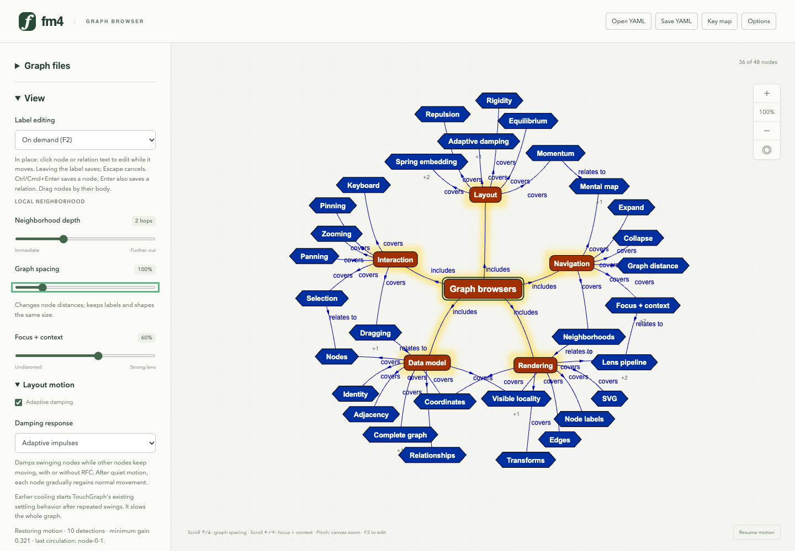
Focus Graph spacing in the side pane, then point back at the graph. The input keeps focus and Enter belongs to that control. Editors, buttons and summaries have the same protection. Click or Tab into the graph when ready to return keyboard control.
Layout motion
39. Suppress oscillation with or without RFC
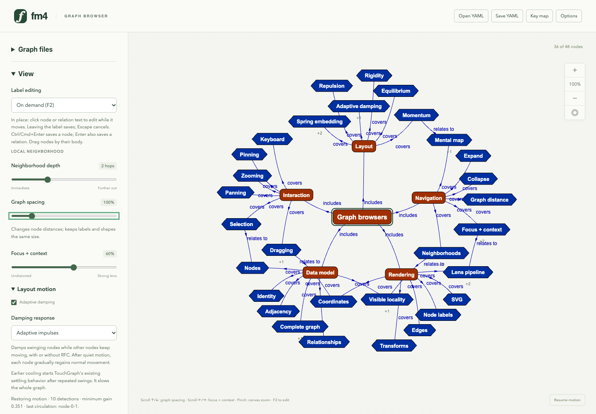
View → Layout motion enables general adaptive damping by default. It watches all movable visible nodes, including when RFC is off as shown here. Adaptive impulses attenuates repeated swings and gradually restores gain; Earlier TouchGraph cooling instead starts the inherited fast cooling phase after detected cycles. The status makes the active setting visible.